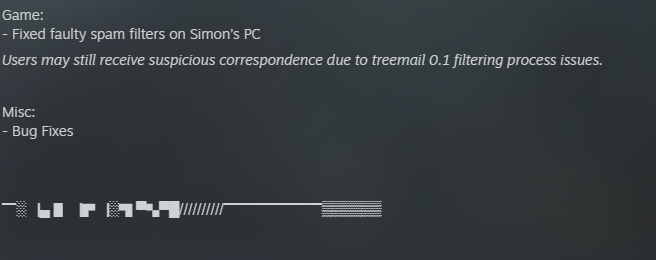

So, Frictional games made another ARG.
It's true! There's a new ARG. At this point A lot has been put forward already, but it's worth taking a real good look. There's not going to be too much analysis here, for now... but let's walk through what can be seen, shall we?
There was a patch to SOMA on September 22, 2025, with the listed patch notes:
Game:
- Fixed faulty spam filters on Simon’s PC
Users may still receive suspicious correspondence due to treemail 0.1 filtering process issues.
Misc:
- Bug Fixes
▔░▕▄ ▋▕▛▕░▜ ▀▚▀█//////////▔▔▔▔▔▔▔▒▒▒▒▒▒
(Hover for Source Image)
The funky text at the end is translatable by unicode, to:
True luxury awai//////////tttttttssssss
So, going into the game, there was an email added to Simon's laptop:
Subject: [Virus Error] You've Ea%ned it
Date: 22 Sep 2025
Dear [HIGH NET WORTH INDIVIDUAL], Are you looking for your next investment opportunity? Get in a***ead of the pa ^ ^ k!
Ever th(0)ught about wha;;; tru/e/ ]]]]uxury might mean? We $$$ure h?~ve. So>>>+etimes we all de$$$erve to h?~ve a wish or two g%?~nted. Don't we?
Sign up now at ***(0);;;/e/]]]]$$$?~ >>> +$$$?~%?~. ^ ^ (0)>>>+ Luxury awaits
(Hover for Source Image)
In it was a coded link to the website www.hotelsamsara.com, determined by using the missing letters as a dictionary for the final code.
So, www.hotelsamsara.com has its fair share of secrets, but it also has a mailing list! Not everyone gets the emails. Personally, I got none!
Emails, lots of them.
If you signed up for the mailing list, you had the chance to receive one of two (and eventually, three) emails. Which one you received was based on a choice you could make during registration, being:
One of many
or
One of few
1/2 is listed:
Investor Update
(the clouds from the first O page)
[name]
Follow the signs--they will lead you to somewhere unlisted. Open doors with care, for some are not meant to be crossed.
Lost time is the tax demanded by every visitor. Ledgers will not balance if you fail to account for what whispers.
Overlays in the documents may appear corrupted, but they are deliberate. We trust you will recognize them as part of the investment process. Each fragment matters--do not discard what seems incomplete.
(Hover for Source Image)

the bottom of the email apparently links to x, but it's linked with just https://x.com/***********__ as the url, so it doesn't actually lead anywhere.
Additionally, the link first goes through the publisher's site, and later was changed to redirect to the intended final website.
Email 2/2:
Investor Update
(more clouds)
[name]
Return often; the archive changes when observed. Some investors have already vanished between the reports.
Once you see the pattern, you cannot unsee it.
Forecasts will shift, though the outcome is certain._silence often conceals the loudest truths._and underneath it all, something continues to wait.
(Hover for Source Image)

The beginnings of the sentences on the second email were a bit odd...
If you record the first letters of each sentence between the first and second email:
1/2
F
O
L
L
O
W
E
2/2
R
S
_
_
Looking back at that broken link, you can substitute this in:
FollowersOf__
Looking at this now might spoil some of the fun- this was eventually used for the game's reveal, and has a lot of newer content now.
The account's posts are largely scrambled, but could be translated using a few clues.
First and foremost: the twitter page uses the same symbol-to letter code for every tweet across the page. This could be assembled into a dictionary:
// = e, o, a
^ = r, a
//* = e
▔ = t
â– = o
☰ = n
— = y
$ = r
& = e
--- = h
• = x
∫ = f
⎜= j
♦ = s
┗ = d
› = g
♤ = v
♩ = i, L
; = u
â– = p
▚ = w
[ = b
█ = i
However, this wasn't absolutely necessary to decipher each of the tweets. Most are obfuscated through unicode at most. The content of these initial tweets have been transcribed:
<> "Who are you really?
<> Are you: one of many/one and only? [this was a poll]
<> <<data_transfer_resumed>>
<> Their sails are caught by an unfamiliar gust,
<> yet always still amounts to never and nothing shall come from it.
<> To understand what is behind the source.
<> Multiply it by an infinity and you will have the number of illusions that embody it.
<> <<system000.21_malfunction>>
<> https://soundcloud.com/followers-998484367
<> <<data_source_located>>
<> Reality: is in the past/is now/is coming? [this was a poll]
<> <<repairing_disk_0000.24>>
<> 30%
<> And their torrents shake at their will.
<> What then would determine their nature?
<> Its existence of the void exists soley to be null.
<> What if an object has no such traces?
<> Shall be rendered a body of burden.
<> The void exists as the void regardless of its service.
<> And yet it exists throughout - throughout - throughout - throughout - throughout and yet throughout exists at once.
<> Those who perceive (Are the same)(Are different) [this was a poll]
<> 50%
<> If all they see between the seas and stars are waves,
<> though the more strength it gains, the more energy it desires.
<> <<warning_data_anomaly>>
<> SEEK [Tweet deleted, contained complement image to clue received on same day]
<> <<corrupt_data_purge>>
<> <<data_recovery_in_progress>>
<> <<recovered_data:voo.pb/pp4dF8ef>>
<> SEEK
<> 70%
<> <<DATA_TRANSFER_IN_PROGRESS>> (DOCUMENTS) (PICTURES) (VIDEOS) [this was a poll]
<> They will search for the crumbs of guidance
<> Those who do not search turn to the path of vulgarity
<> The path of the metaphorical strays not far from that of reality
<> Step back onto the path
<> The path to tomorrow is the same as the path you should take today, as it was the same as yesterday, for the true path is the one looking inwards
<> <<4/6_FILES_LOCATED>>
<> Implicit in the cosmos, ordering it and giving it form and meaning
<> Beings or Entities
<> All that subsists by itself and which has not its being in another
<> Activity on the rational part of the soul on the basis of virtue I II III IIII
<> The search for the unknown may only result in the unknown finding you
<> 80%
<> <<5/6_FILES_LOCATED>>
<> Words of wisdom hold keys unknown, for the first of them shall create formidable characters, underlining their importance
<> Nature is it's own source of motion
V
(Hover for Source Text)
<> fffffffffffffffffff
<> whhhhhhhhâ– a
<>whâ– whâ– hwâ– hhhh
<>whâ– wh arrraree
<> whâ– aree////////////////
<> whâ– areeeeey
<> whâ– are y00u
<> whâ– are yâ– u really?
<> who rr you u really?
<poll> a🅁🄴 🅈ou (one of manⓨ) (on𝕖 and only)
<> <<d(ta_t$ansf*r_resum&d>>
<> 𝚃𝚑𝚎𝚒𝚛 𝚜𝚊𝚒𝚕𝚜 𝚊𝚛𝚎 caught by an unfamiliar 𝔤𝔲𝔰𝔱,
<> yet always still amounts to never and n//thing shall come from it.
<> to und//rstand what is behind the source.
<> multiply it by an infinity and you will have the number of illusions that embody---- it.
<> <<sy/stem0000.21_mal/functiâ– n>>
<> soundcloud.C0m/follâ–wers-998484367
<> ♢
<> <<d//ta_source_located>>
<poll> reality- (is 𝚒𝚗 𝚝𝚑𝚎 𝚙𝚊𝚜𝚝) (is 𝚗𝚘𝚠 ) (is 𝚌𝚘𝚖𝚒𝚗𝚐)
<> <<rep^iring_disk_0000.24>>
<> iiiissssss30%
<> and the tor^ents shake at theiiiiir will
<> W---at then would determine its nature?
<> its existence of the v//id e•ists solely to be null000000000000000000000000000000000000000000000000000000000000000000000000000000000000000000000000000000000000000000000000000000000000000000000000000000000000000000000000000000000000000000000000000000000000000000000000000000000000
<> What i∫ an ob⎜ect has no ♦uch traces?
<> shall be re☰dered a body of bur┗en
<> The voi┗ exists as the void re›ardless of its ser♤ice.
<> And yet it ex♩sts throughout - throughout - throughout - throughout - throughout and —et ▔hr//u›ho;t exists at once.
<poll> Thos//* who â–erceive (Are 𝚝𝚑𝚎 𝚜𝚊𝚖𝚎)(Are 𝚍𝚒𝚏𝚏𝚎𝚛𝚎𝚗𝚝)
<> Iiiiisssss50%
<> if all they see between the seas a☰d stars are w^ves,
<> though the m//re stren›th it gains, the more energ— it ┗esires.
<> <<warning_data_anom^ly>>
<> S//*//*K (contains image, DELETED TWEET)
<> <<cor^upt_data_â–urge>>
<> <<D^TA_REC//VERY_IN_PRO›RESS>>
<> <<reco♤ered_data: voo.pb/pp4dF8ef>>
<> S//*//*K
███████▒▒▒70%
<poll> <<D^TA_TRANS∫ER_IN_P^OGRESS>> (D//CUMEN▔S) (PI*TURES) (V█DEOS)
<> The— ▚ill search for the crum[s of gui┗ance,
<> Those w—-o do ☰ot search, t;rn to the path of vulgarity
<> Th//* path of the metaphor^cal stra—s not far from that of the rea♩ity
<> Step [ack ont// the path
<> The p^th of informatio☰ holds ͫany planes
<> The path to tomorro▚ is the same a♦ the path you sh//uld take today, as it was the same as y//*sterday, for the tr;e path is the one looking i☰wards
<> <<4/6_FILES_LOC^TED>>
<> Impli*it in the cosm//s, ordering it and giving it fo^m and meaning
<> Bein›s or Entiti//*s
<> All that subsists by █tself and ▚hich has not its being in ano▔her
<> Acti♤ity of the rational part of the s//ul on the basis of virt;e
I II III IIII
<> The s//*arch for the unknow☰ may only result ♩n the unknown ∫inding you
<>████████▒▒80%
<> <<5/6_F♩LES_LOCAT//*D>>
<> W//rds of wisdom hold ke—s unknown, for the first of them shall create formidable ch^racters, underlinin› their importance.
<> <<5/6_FIL//*S_TRANSFE^RED_SU*CESSFULLY>>
<> Nature is its o▚n source of m//tion
V
Additionally, there was an image in one of the posts, with accompanied text that fairly clearly says 'SEEK':

(Hover for Source Image)

Soundcloud
You might have noticed while skimming that there were was a URL to a soundcloud in those posts.
Initially, there were six songs posted to the site, with each having a title translateable in ROT13:
As far as I can tell, this site could also have been found by looking at the web tools- one of the images is titled "SEARCH%AND%DISCOVER_edited".
But they indicate that the site www.hotelsamsara.com/admin exists.
Much later on, a "+" symbol became visible on the video of the hotel lobby/entrance in the bottom right corner. this leads to the admin login page.
Administrator Access
There is a prompted password, which is LOOPED. Because the theme is samsara. I say how this was determined at the end.
It was also determined that combining all the bolded letters on the site yielded the word "Steganograph". Look that up if you want, but it's only thematically related for now.
this gives a blue "terminal" theme with the text:
ADMIN
User access granted...
RESPONSE CODE = 200
KEY DATA POINTS TRANSFERRED*
ADMIN ACCESS CODE REQUIRED
FINAL PIECES ______
At the end of this is an image which contains the text:
gurnagnaqguroveq.pbz
Which is pretty clearly a cipher, leading to:
theantandthebird.com
Which I suppose intentionally kinda freaky. The landing page is actually part of the selection box visible on the page, (but not --why--, for some reason), which has the options:
• --why--
• P
• O
• O
• L
• E
• D
As proof of how deep this ARG is, the word POOL is the opposite of LOOP. The password was LOOPED!! It's not a lake.
Seriously, though, there's a fair bit about A. gambling, and B. karma. Maybe there's a sort of super-secret thing going on here where they're pooling karma into one big karmic stockpile. And that's what Felix is using to get all his good fortune.
From this point on, the rest of this section is a catalogue of information from the antandbird website. I could include an image for each page as a sort of hover thingamabob... but I'm lazy. I encourage looking along on the site yourself!
if it bears any importance, all of these pages use the same stylesheet:
92300932.css
Any page-specific css is in-line.
For future reference, each of these headers will contain first the title of the page, followed by the file of the URL, followed by the page selection (in POOLED).
theantandthebird.com
--wofzpz-- (2572324293.php) [P]
The title is a cipher for physis.
The words:
then
now
start
end
here
1 national
appear in small text between the repeated text:
When a bird has wings, you may expect it to fly.
▔■▂■â–▔█â–â–•â–„ ■■▔▇▄ â–▀▔▇ â– â–… ▃█▒▂■▙▄░▜ ▜■▕ ▌▕▒▔ â–•â–▃▄░▒▔▀â–â–ƒ,
the text is translated from the code:
01010111 01101000 01100101 01101110 00100000 01100001 00100000 01100010 01101001 01110010 01100100 00100000 01101000 01100001 01110011 00100000 01110111 01101001 01101110 01100111 01110011 00101100 00100000 01111001 01101111 01110101 00100000 01101101 01100001 01111001 00100000 01100101 01111000 01110000 01100101 01100011 01110100 00100000 01101001 01110100 00100000 01110100 01101111 00100000 01100110 01101100 01111001 00101110
The block text here is translatable, as it is a font set. Here, it is not the same as the text, and says:
To continue on the path of discovery you must understand,
It doesn't go anywhere from there though, it seems, as the rest just repeats.
__bagbf__ (4145461434.php) [O]
The title is a cipher for Ontos.
Clouds scroll vertically upwards. need to analyze images, but it seems to just be playing into the bird/sky motif.
The images are titled incorrectly, giving the order:
1
2
3
->8
5
7
4
That ->8 has to be a hint. If we look a bit closer at that image:

If you squint, you can see the text:
2 allies
ousia (1969234802.php) [O]
This is not an encoded title.
There is an ASCII bird here:
o
o%
//
-="~\
~\\\
\\\
\\\
);\
/|;;\
""";;;;;;;\
///"""""""";;;;;;\
___////+++++""""""""""""";;;@@\
__________///////++++++++++++++""""""""@@@@%)
....__/0)///0)//0)//0)/++////////++++++++++"""@@@%%%%%/
..---0)/--------////////////////+++++++/////+++++@@%%%%%%%/
..///---0)---0)///0)//0)///0)/////////+++++====@%%%%%%/
...0)....//----///------////////////+++++///" \/\\//
//../0)--0)///0)///0)///0)//++++///// / \/
--///--------///////////+++///// _/ /
.-//..0).-/0)--0)--0)--0)--.. /\ /
.......--/////////. /\_
.0)..0)..
Commented in the HTML, there is:
For the bird that does not fly may face less strife than the bird that does. The bird that flies may find more answers than the bird that does not.
There is a video that follows with no source:
<div class="asdklja"> <video autoplay="" playsinline="" muted="" loop="" crossorigin="anonymous"> <source src="" type="video/mp4"> </video> </div>
Therefore, it doesn't show up as anything, and the background remains blank. I tried to use the source for the video on the hotel website, but nothing happened.
There might be a video on the theantandthebird website that could be used here, but I haven't found it.
Addendum:
The bird on the screen, on second thought, does suggest that there might be a bird.mp4, or something. I don't think the ="" on each variable to the video element is neccessary- I remove them here, along with the muted variable entirely. You end up with this clip:
Because the video is in the root of the site, rather than, say, in a video folder (which would change the source syntax to video/bird/mp4, for example), I assume that this is the intended method to figure this out. This video has audio! Which means that we can do a spectrogram, which yields:

So we can see the text:
//* ras //*
[ ♩ ^┗ ▚
The first part probably means erase, while the second part is the code from the twitter page. This translates to:
erase
bird w
I mean. Sure. We can come back to that later.
Also commented here is:
<--3 extremely-->
****-0071_ (logos-0071.php) [L]
This doesn't appear to be a coded title, either.
This is just a midi synthesizer with an image of stars (logos.jpg) below it.
I'm too lazy to look at the i mage any closer. I couldn't find anything myself, but you could take a look.
_ERGON_ (2206082065.php) [E]
The background changes on a set sequence every ten seconds:
Black
Red
Blue
Purple
White
Green
Black is not included in the rotation, rather the colors start changing at red, and continue in a loop from there. The screen is black until this begins.
As a result, after changing off of black, the text:
2 snaps.
Appears at the bottom of the page.
Additionally, cropped squares of a picture of an ant appear at the location of the cursor. They are not cleared, regardless of the number placed. The ants can overlay the "2 snaps" text. The images seem to just have random names pulled from the Frictional Games Discord server.
magnecy1
steph
mindscape
darknix
dnesov
coolcat
zhart
mose
gordron-frenchman
pipesbuffet
killthecoroner
darknix
RaideX
Puresh
TiMan
viira
ramen_llama
Phil2244
Hugo
robotoverlord
Nanook
The images are chosen randomly, without sequence.
dynamis (the text is "corrupted") [D]
This is the landing page for theantandthebird.com. Because this is the last site on the drop-down, maybe this is supposed to indicate DELOOP being the intended reading... Or something. the page is configured like a smeared asterisk, with the text:
expectations exist,
â–„â–›â–▄▂▔▀▔█■â–â–’ ▄▛█▒▔,
yet they are the essence of the dream you cannot revisit.
█▜▄▔ ▔▇▄▜ ▀░▄ ▔▇▄ â–„â–’â–’â–„â–â–‚â–„ â– â–… ▔▇▄ ▃░▄▀▌ ▜■▕ â–‚â–€â–â–â– ▔ ░▄▙█▒█▔.
The bird may have wings it is never able to use.
▔▇▄ ▁█░▃ ▌▀▜ ▇▀▙▄ â–šâ–ˆâ–▆▒ █▔ █▒ ▍▄▙▄░ â–€â–â–‹â–„ ▔■▕▒▄.
The bird may never look up and see the sky.
▔▇▄ ▁█░▃ ▌▀▜ ▍▄▙▄░ ▋▎ â– ▊ ▕▏ ▀▍▃ ▒▄▄ ▔▇▄ ▒▊▜.
This text runs across each box composing the smear. In the top asterisk, it runs left. In the bottom, it runs right.
The block text here is translatable, as it is a font set. Here, they just mimic each verse.
Hidden between the two in black text is also:
3 garden
CHECK
There was later one additional email:
Password Reminder
Thank you for requesting a reminder of your password.
XXXXXX
Your memorable hint:
For the five, seek the paths.
For the sixth, shrouD empty siren, contra totem; omni whispers.
(Hover for Source Image)
This one's a doozy.
Notes, ideas, and so on
perhaps this all just suggests a sequence:
1. national.
_1 added.__
2 snaps.
2 allies
3. garden
<!-- 3 extremely -->
(it seems like there might be pairings with and without a period??)
I was just thinking about this because of the "FINAL PIECES ______" text earlier. I have a half-serious hunch that there's another admin code here that we need to find... but I don't know if that's the case.
If you're cheeky, you can kinda extrapolate the whole poem, though:
To continue on the path of discovery you must understand,
expectations exist,
yet they are the essence of the dream you cannot revisit.
The bird may have wings it is never able to use.
The bird may never look up and see the sky.
For the bird that does not fly may face less strife than the bird that does.
The bird that flies may find more answers than the bird that does not.
But for now, it appears the ARG is functionally complete, as the full announcement was already made... but what if there's more !
After all, they did tease all this changing with time... and there's more on the twitter page that hasn't been shown on the site yet, either.
I hope you like this rant and check out the site yourself. But also, you probably need a good bit of time for it.
...
...
...
You thought I was done?
eraseandbecome.com
If you haven't already, check out the reveal video, too:
There's a preeeety interesting sound near the end:

Thanks for checking this out.